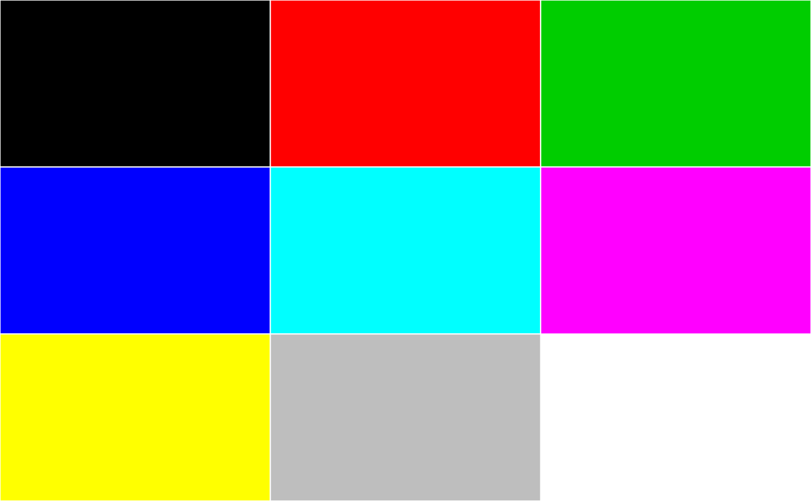
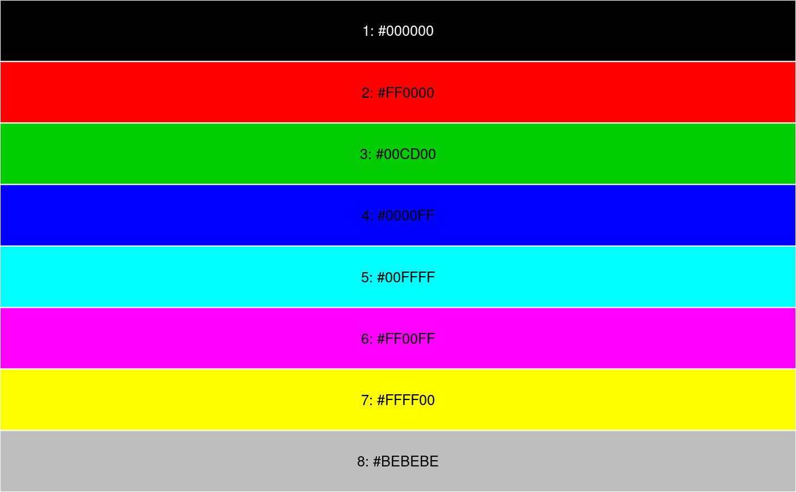
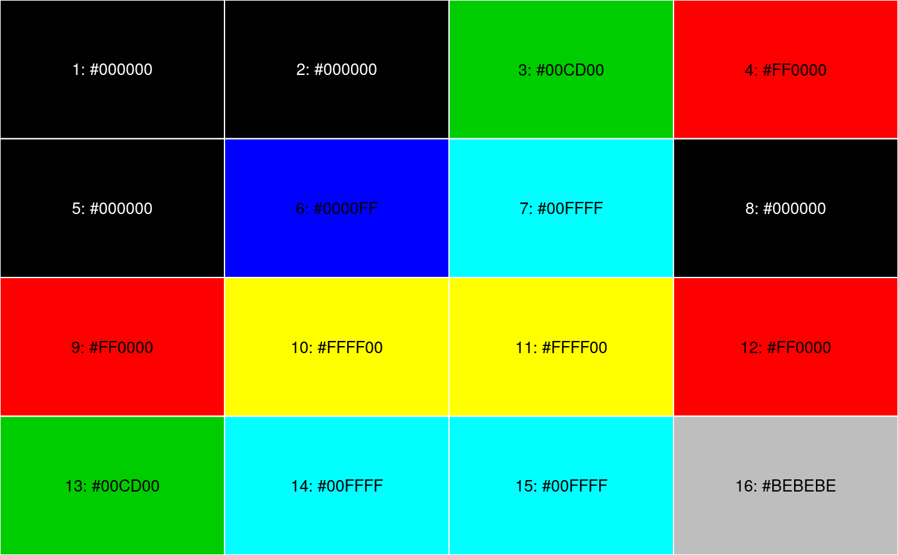

Displays a color palette and information about the colors it is made of.
showPalette(x = grDevices::palette(), inline = FALSE, add_number = FALSE, add_codecolor = FALSE, cex_num = 1.2)
| x | a vector of colors. |
|---|---|
| inline | a logical. If |
| add_number | a logical. If |
| add_codecolor | a logical. If |
| cex_num | the magnification coefficient of the color vector's indices. |
The color palette displayed as an invisible output.
showPalette()showPalette(inline=TRUE)showPalette(1)